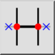
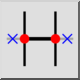
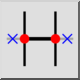
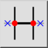

Auto Trim
Verktygsfält / ikon:
 

Meny: Ändra > Auto Trim
Genväg: A, X
Kommandon: autotrim | ax
Detta är en automatisk översättning.
Verktygsfält / ikon:
 

Meny: Ändra > Auto Trim
Genväg: A, X
Kommandon: autotrim | ax
Trimmar eller förlänger en enhet på båda sidor till nästa begränsande enhet.